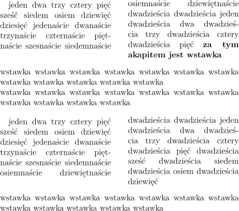

Pakiet dostarcza ¶rodowisko strip, mo¿e ono byæ u¿yte wy³±cznie w sk³adzie dwuszpaltowym (opcja twocolumn lub polecenie
\twocolumn) w trybie pionowym (ang. vertical).
Otwarcie ¶rodowiska przerywa sk³ad dwuszpaltowy, z dotychczasowego materia³u
s± formowane szpalty (zbalansowane), nastêpnie wstawiana jest zawarto¶æ
¶rodowiska strip na obszarze obu szpalt; podlega ono
³amaniu na szpalty, ale strona z podzielon± wstawk± jest d³u¿sza --
s± problemy równie¿ ze zbalansowaniem szpalt (jak widaæ na ilustracji).

Pakiet jest dostêpny pod adresem:
ftp://ftp.gust.org.pl/TeX/macros/latex/contrib/sttools
 W³odzimierz Macewicz
W³odzimierz Macewicz